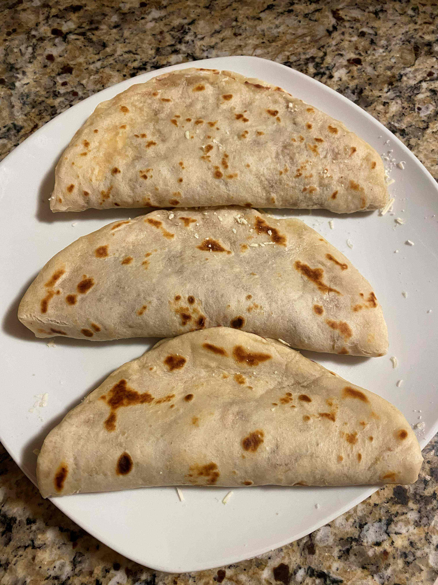
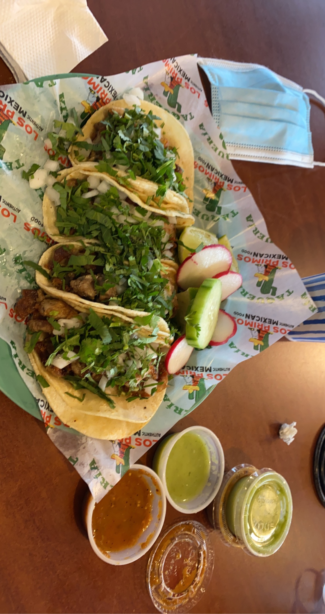
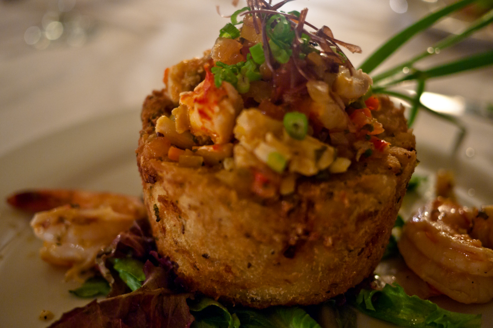
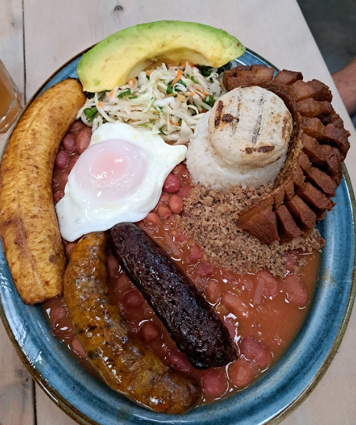
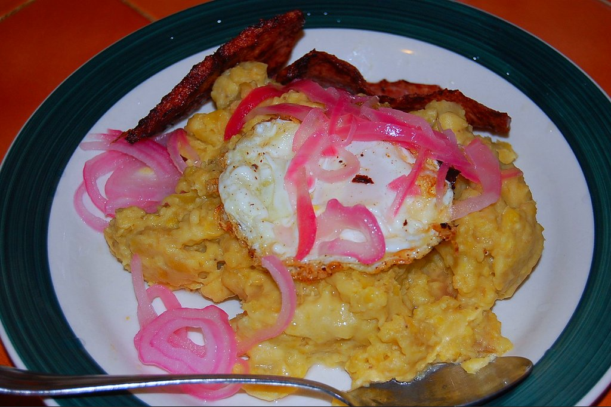

Here is a list of my top six favorite international foods I have tried. The list includes a variety of dishes from different countries. They are ranked based on my personal preference from 1 being my favorite to 6 being my least favorite.They are all delicious and unique in their own way.
| Personal Ranking | Name | Description | Image | Main Ingredients | Country of Origin |
|---|---|---|---|---|---|
| 1 | Baleadas | Hand made flour tortillas filled with fried beans, cheese, cream. You have the option to add scrambled egg, and skirt steak. |  |
Flour, beans, cheese | Honduras |
| 2 | Pupusas | Stuffed corn tortillas with various fillings. Usually pork, beans, and cheese. There are healthy options available that have vegetables. | |
Corn, pork, beans, cheese, vegetables | El Salvador |
| 3 | Tacos al Pastor | Grilled pork tacos with pineapple and cilantro. |  |
Marinated pork, pineapple, cilantro | Mexico |
| 4 | Mofongo | Mofongo is a traditional Puerto Rican dish made with mashed fried plantains, pork, and shrimp. |  |
Plantains, pork, shrimp | Puerto Rico |
| 5 | Bandeja Paisa | This dish is made with beans, rice, meat, and avocado. |  |
Beans, rice, meat, avocado | Colombia |
| 6 | Mangu | This dish is made with mashed plantains, pork, and salami. Usually served with a side of beans and cheese. |  |
Plantains, pork, salami, beans, cheese | Dominican Republic |